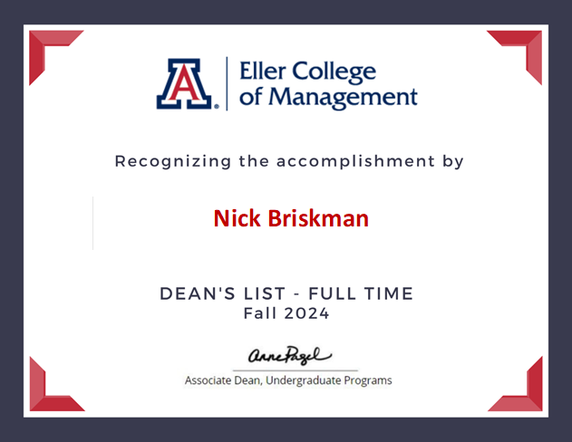
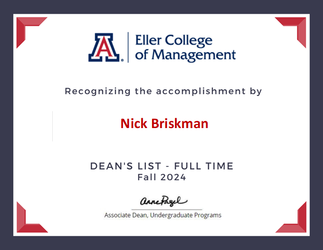

Certificates
Dean's List Recognition
I'm proud to have earned multiple Dean's List honors—including Dean's List Full Time, Honorable Mention, and with Distinction—across several semesters. These certificates reflect my dedication and perseverance as I navigated challenges in my academic journey. I strive to improve every day, grow intellectually, and maintain a strong sense of purpose in my pursuit of excellence. Additionally, my experience winning a university case competition sharpened my communication and strategy skills. Collaborating with a team to analyze business options and deliver a persuasive presentation taught me to think creatively and lead with confidence.
.png) 

 copy.png)
Case Competition Winner
During my Fall 2024 semester, I had the opportunity to participate in a case competition where we analyzed whether a coffee shop should add a patio or a drive-thru. My group chose the patio option and developed a detailed and visually engaging presentation. We proposed several innovative ideas to boost profits, including introducing a rewards app. This experience significantly enhanced my presentation skills and better prepared me for future projects.